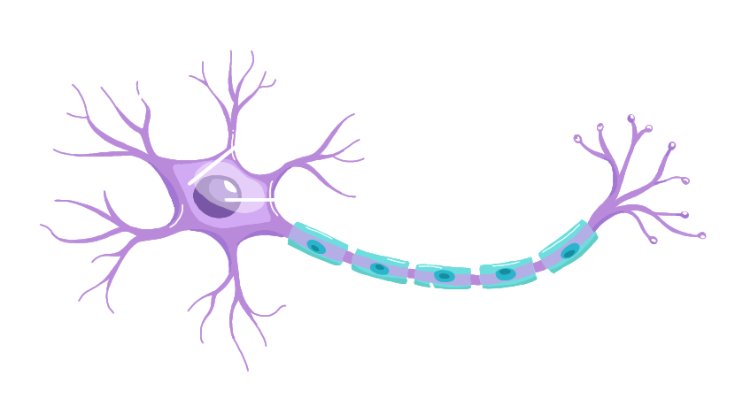

Os dendritos são prolongamentos do neurônio que garantem a recepção dos estímulos, levando o impulso nervoso em direção ao corpo celular. A grande maioria dos neurônios apresenta uma grande quantidade de dendritos.
Local do neurônio onde está presente o núcleo, grande parte das organelas celulares e de onde partem os prolongamentos dessa célula. É onde ocorre o metabolismo celular.
O núcleo do neurônio, localizado no corpo celular (ou soma), tem como principal função armazenar o material genético (DNA) e controlar o metabolismo e o funcionamento de toda a célula.
A bainha de mielina é uma camada rica em lipídios e proteínas que envolve os axônios dos neurônios, atuando como um isolante elétrico. Tem descontinuidades chamadas nódulos de Ranvier. A bainha de mielina é composta de células gliais que se enrolam no axônio e podem ser de dois tipos: oligodendrócitos e células de Schwann.
Prolongamento que garante a condução do impulso nervoso. Cada neurônio possui apenas um axônio, o qual é, geralmente, mais longo que os dendritos. Envolvendo o axônio, está um isolamento elétrico chamado de bainha de mielina.